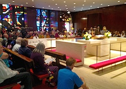

Dear Friends,
The month-long deliberations of governments in the Nuclear Non-Proliferation Treaty (NPT) review at the United Nations ended today. Just before the talks began, FORUSA staff participated in the Peace and Planet weekend conference and mobilization for a nuclear-free, peaceful, just, and sustainable world.
As we reported earlier, the weekend featured an interfaith service at the UN Church Center, powerful speakers at a mass rally in Union Square where the Global Wave 2015 -- a synchronized wave from all over the world to say goodbye to nuclear weapons -- was launched, and a march to the UN that clearly demonstrated to world leaders that the people want a nuclear free planet.
I was blessed with the opportunity to deliver the homily at the interfaith service on the Sunday morning before the NPT talks began. As the outcome of this five year review appears to offer both hope of progress and evidence that our work as peacemakers must continue, I'd like to share that homily with you now by way of offering an ongoing prayer:
In 1948, three years after atomic bombs were dropped on Hiroshima and Nagasaki, when the genocidal world war that claimed the lives of over 60 million had ended, Jacques Ellul, the French Philosopher and lay theologian, observed that never before had we as a society given more attention to our security, never had we invested more in technological solutions to our security, and yet never before had we felt so insecure.
We have gathered here as the review of the nuclear non-proliferation treaty is about to begin because we know, as people of faith, that true security will never come from a weapons system. Security is not primarily a political issue, it is a spiritual issue. True security is the opposite of the mad grasping we experience when nation states spend billions on building and maintaining nuclear weapons systems. True security is letting go, it is waking up to the illusion that peace can be brought by some external technological means.
True security is striving instead for life through the truth that we are all interconnected and interdependent; or, as Zen Buddhist monk Thich Nhat Hanh says, "We inter-are."
If we take the focus off security and strive instead to tend to each other's deep wellbeing, we will find a kind of thriving never attainable when mere security is the goal.
As has been borne witness to in this conference, the structure of a society that relies on nuclear weapons for security will play out its logical conclusions that militarized communities are necessary, that mass incarceration is necessary, the repression of freedom is necessary, that nature is something to be used and abused.There is a connection between nuclear missiles in silos in Wyoming and Colorado and North Dakota and the automatic weapons aimed at protestors in Ferguson. There is a connection between nuclear arsenals that could annihilate life on this planet and the climate change we are now experiencing. This grasping for security is a death cycle.
But the pursuit of peace through an acknowledgment of our interdependence is a spiral leading to ever greater abundance and life. We are connecting our struggles, and in so doing, connecting ourselves.
We, as people from all faith traditions and spiritualties, must lift up a different way, not to death but to life. What is this way? Where does it begin? As peacemakers, we are called to bring hope where there is despair, faith where there is doubt, pardon where there is injury. We are called to the work of reconciliation which begins by bearing witness to the harm that we have caused, because that harm has not yet been healed.
On Friday night (at the opening plenary), in sitting with each other in 45 seconds of silence as Daniel Ellsberg instructed us to do, envisioning the space between the dropping and the detonation of the bomb over Hiroshima, we were preparing ourselves to bear witness. In hearing the testimony of the children of the A bomb, we are not turning away from the hubris and the horrors of our nuclear past and present. In persevering for peace by protest and participation in the review conference, we are seeking to make right the grave moral injury to humanity and creation that nuclear weapons perpetuate.
The work to create a world free from nuclear weapons is a gargantuan task, and it is easy to become overwhelmed with it. To be unsuccessful in it is to risk the survival of our planet, our natural world, our human species. But we need only to look into the faces of children and youth, to bring the overwhelm to scale.
A few weeks ago, my son turned 13. In many spiritual traditions, this is the age at which persons begin to take on adult responsibilities within the community, to make commitments and contributions. He is a person with a peacemaker's heart. He is exploring nonviolence, and he especially finds comfort in the company of other pacifists. Our work is to support a vision for his decency and his life, and for the decency and abundant thriving of all children and youth, all creatures and species who will inherit the earth. It is individual, it is moment by moment, it is all of us.
Our gathering here this morning, our proclamation throughout the Nuclear Nonproliferation Treaty review conference, and our ongoing quest for abolition through a global ethic of solidarity is the light in the darkness and the hope in the face of despair. May we be emboldened by that vision, may we be sustained by each other and may we be empowered by the spirit of life and goodness and abundance in the universe as we bring to fruition a nuclear free world. Amen.
In service to a peaceful, just, and sustainable world,
 Rev. Kristin Stoneking Rev. Kristin Stoneking
Executive Director
Fellowship of Reconciliation
Photos: Peace and Planet organized march, Rev. Stoneking offering homily, Interfaith Convocation in United Nations Church Center sanctuary, Daniel Ellsberg speaking at opening plenary, and U.U. Rev. Chris Antal with young reader of testimony from Children of the A Bomb -- all photos courtesy of Arnie Alpert. |